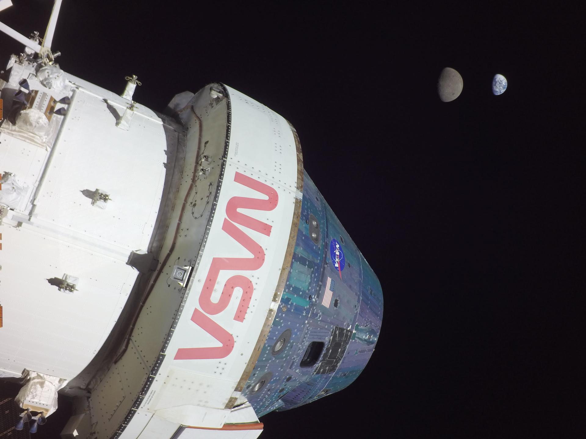

Planet
Simulation


Stars Stories
Which star and planet do you want to explore?

NASA's Webb Peers into the Extreme Outer Galaxy
Astronomers have directed NASA's James Webb Space Telescope to examine the outskirts of our Milky Way galaxy...
Read MoreArticle - 1 week ago

NASA's Webb Peers into the Extreme Outer Galaxy
Astronomers have directed NASA's James Webb Space Telescope to examine the outskirts of our Milky Way galaxy...
Read MoreArticle - 1 week ago

NASA's Webb Peers into the Extreme Outer Galaxy
Astronomers have directed NASA's James Webb Space Telescope to examine the outskirts of our Milky Way galaxy...
Read MoreArticle - 1 week ago

NASA's Webb Peers into the Extreme Outer Galaxy
Astronomers have directed NASA's James Webb Space Telescope to examine the outskirts of our Milky Way galaxy...
Read MoreArticle - 1 week ago
NASA's Webb Peers into the Extreme Outer Galaxy
Astronomers have directed NASA's James Webb Space Telescope to examine the outskirts of our Milky Way galaxy...
Read MoreArticle - 1 week ago
NASA's Webb Peers into the Extreme Outer Galaxy
Astronomers have directed NASA's James Webb Space Telescope to examine the outskirts of our Milky Way galaxy...
Read MoreArticle - 1 week ago
.png)
The Astronaut's Voyage to
Explore the Stars
Destinations
Earth, Moon, and Mars
With more than 20 years of operations in low Earth orbit, we are preparing our return to the Moon for long-term exploration and discovery before taking the next giant leap to Mars.
Never has humanity endeavored to simultaneously architect multinational infrastructures in lunar orbit, on the lunar surface, and at Mars — all while maintaining high-demand government and private-sector operations in low Earth orbit.

On flight day 13, Orion reached its maximum distance from Earth during the Artemis I mission when it was 268,563 miles away from our home planet. Orion has now traveled farther than any other spacecraft built for humans.
Why Go to Space?
The reasons to explore the universe are as vast and varied as the reasons to explore the forests, the mountains, or the sea. Since the dawn of humanity, people have explored to learn about the world around them, find new resources, and improve their existence.Why Go to Space
Human space exploration helps to address fundamental questions about our place in the universe and the history of our solar system.
Exploration of Jupiter and its moons is crucial for understanding our solar system.
Exploration vision is anchored in providing value for humanity by answering some of the most fundamental questions: Why are we here? How did it all begin? Are we alone? What comes next?
This illustration shows Cassini spacecraft in orbit around Saturn. Cassini made 22 orbits that swooped between the rings and the planet before ending its mission on Sept. 15, 2017, with a final plunge into Saturn.
Spaceships and Rockets
Learn more about spaceships and rockets enabled by NASA.Spaceships and Rockets
What is a rocket?
A rocket is used to carry a spacecraft from Earth’s surface to space, usually to low Earth orbit or beyond, and is sometimes called a launch vehicle.
Although rockets may appear similar, no two are alike because they are complex devices with millions of pieces and systems that must be calculated and constructed to work together. A rocket is chosen based on the spacecraft’s mission requirements. For example, the farther away from Earth the spacecraft needs to go, the bigger and more powerful the rocket needs to be.
A United Launch Alliance Atlas V rocket with the Lucy spacecraft aboard is seen in this 2 minute and 30 second exposure photograph as it launches from Space Launch Complex 41, Saturday, Oct. 16, 2021, at Cape Canaveral Space Force Station in Florida. NASA/Bill Ingalls
Commercial Crew Rockets
These commercial rockets are launching crews to low Earth orbit through partnerships with NASA.
A new generation of rockets capable of carrying astronauts to low Earth orbit and the International Space Station provides expanded utility, additional research time, and broader opportunities for discovery on the orbiting laboratory.

With a view of the iconic Vehicle Assembly Building at left, a SpaceX Falcon 9 rocket soars upward from Launch Complex 39A at NASA’s Kennedy Space Center in Florida on April 23, 2021, carrying the company’s Crew Dragon Endeavour capsule.
Commercial Resupply Rockets
These commercial rockets are launching crews to low Earth orbit through partnerships with NASA.
A new generation of rockets capable of carrying astronauts to low Earth orbit and the International Space Station provides expanded utility, additional research time, and broader opportunities for discovery on the orbiting laboratory.
With a view of the iconic Vehicle Assembly Building at left, a SpaceX Falcon 9 rocket soars upward from Launch Complex 39A at NASA’s Kennedy Space Center in Florida on April 23, 2021, carrying the company’s Crew Dragon Endeavour capsule.
Unmanned Rocket
These commercial rockets are launching crews to low Earth orbit through partnerships with NASA.
A new generation of rockets capable of carrying astronauts to low Earth orbit and the International Space Station provides expanded utility, additional research time, and broader opportunities for discovery on the orbiting laboratory.
With a view of the iconic Vehicle Assembly Building at left, a SpaceX Falcon 9 rocket soars upward from Launch Complex 39A at NASA’s Kennedy Space Center in Florida on April 23, 2021, carrying the company’s Crew Dragon Endeavour capsule.
Orion Spacecraft
The reasons to explore the universe are as vast and varied as the reasons to explore the forests, the mountains, or the sea. Since the dawn of humanity, people have explored to learn about the world around them, find new resources, and improve their existence.Spaceships and Rockets
What is a spacecraft?
A spacecraft is a vehicle that flies in space. It can carry astronauts, cargo, or instruments to their destination, or it can be the destination. The International Space Station is a spacecraft, just like the smaller vehicles that deliver crew and cargo to it.
Spacecraft launch on rockets and have their own propulsion and navigation systems that take over after they separate from the rocket, propelling them to other worlds in our solar system. Their main purpose lies in transporting payloads — or anything within the vehicle beyond what is essential to operate in space — to their destination. For example, for the Artemis II Moon mission, a human crew and other experiments will be carried aboard the Orion spacecraft.
This illustration shows Cassini spacecraft in orbit around Saturn. Cassini made 22 orbits that swooped between the rings and the planet before ending its mission on Sept. 15, 2017, with a final plunge into Saturn.
Commercial Cargo Spacecraft
These commercial rockets are launching crews to low Earth orbit through partnerstation with NASA.
A new generation of rockets capable of carrying astronauts to low Earth orbit and the International Space Station provides expanded utility, additional research time, and broader opportunities for discovery on the orbiting laboratory.
With a view of the iconic Vehicle Assembly Building at left, a SpaceX Falcon 9 rocket soars upward from Launch Complex 39A at NASA’s Kennedy Space Center in Florida on April 23, 2021, carrying the company’s Crew Dragon Endeavour capsule.
Commercial Crew Spacecraft
These commercial rockets are launching crews to low Earth orbit through partnerstation with NASA.
A new generation of rockets capable of carrying astronauts to low Earth orbit and the International Space Station provides expanded utility, additional research time, and broader opportunities for discovery on the orbiting laboratory.
With a view of the iconic Vehicle Assembly Building at left, a SpaceX Falcon 9 rocket soars upward from Launch Complex 39A at NASA’s Kennedy Space Center in Florida on April 23, 2021, carrying the company’s Crew Dragon Endeavour capsule.
International Partner Rockets and Spacecraft
These commercial rockets are launching crews to low Earth orbit through partnerships with NASA.
A new generation of rockets capable of carrying astronauts to low Earth orbit and the International Space Station provides expanded utility, additional research time, and broader opportunities for discovery on the orbiting laboratory.
With a view of the iconic Vehicle Assembly Building at left, a SpaceX Falcon 9 rocket soars upward from Launch Complex 39A at NASA’s Kennedy Space Center in Florida on April 23, 2021, carrying the company’s Crew Dragon Endeavour capsule.